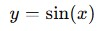

La función seno de un ángulo α es una función trigonométrica cuya fórmula se define como la razón entre el cateto opuesto y la hipotenusa de un triángulo rectángulo (triángulo con un ángulo recto). Este tipo de función matemática suele escribirse con la abreviatura «sen» o «sin» (del latín sinus). Además, también se le puede llamar función sinusoidal, sinusoide o senoide. La función seno es una de las razones trigonométricas más conocidas, junto con el coseno y la tangente de un ángulo.
También es una función periódica que se define en trigonometría y es fundamental para el estudio de ondas y fenómenos cíclicos. La función seno está dada por:
Donde x es el ángulo en radianes. La función seno tiene un periodo de 2π radianes (360 grados), lo que significa que sus valores se repiten cada 2π radianes. La amplitud de la función seno es 1, y oscila entre -1 y 1. Su gráfica es una onda sinusoidal que comienza en el origen (0,0), alcanza su valor máximo de 1 en π/2 radianes, regresa a 0 en π radianes, alcanza su valor mínimo de -1 en 3π/2 radianes, y finalmente regresa a 0 en 2π radianes
Los valores de las imágenes de la función seno siempre están entre +1 y -1, es decir, está acotada superiormente por +1 e inferiormente por -1. Además, los valores se van repitiendo cada 360 grados (2π radianes), por lo que se trata de una función periódica cuyo periodo es 360º.
La función coseno de un ángulo α es una función trigonométrica cuya fórmula se define como la razón entre el cateto contiguo (o adyacente) y la hipotenusa de un triángulo rectángulo (triángulo con un ángulo recto).A este tipo de función matemática también se le llama cosinusoide, cosenoide o función cosenoidal. La función coseno es una de las tres razones trigonométricas más conocidas, junto con el seno y la tangente de un ángulo.
También es una función periódica y está estrechamente relacionada con la función seno. Se define como:
Al igual que la función seno, la función coseno tiene un periodo de 2π radianes. Sin embargo, a diferencia de la función seno, la función coseno comienza en su valor máximo de 1 cuando x=0, y la gráfica de la función coseno también oscila entre -1 y 1. La gráfica de la función coseno es una onda cosenoidal que alcanza su valor máximo en x=0, regresa a 0 en π/2radianes, alcanza su valor mínimo en π\piπ radianes, regresa a 0 en 3π/2 radianes, y vuelve a su valor máximo en 2π radianes.
Como puedes ver en la gráfica, los valores de las imágenes de la función coseno siempre están entre +1 y -1, es decir, está acotada superiormente por +1 e inferiormente por -1. Además, los valores se van repitiendo cada 360 grados (2π radianes), por lo que se trata de una función periódica cuyo periodo es 360º.